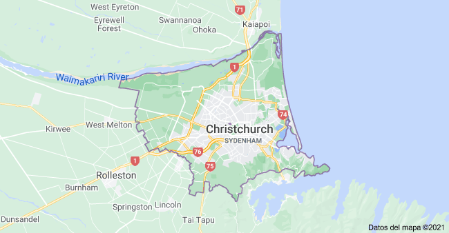
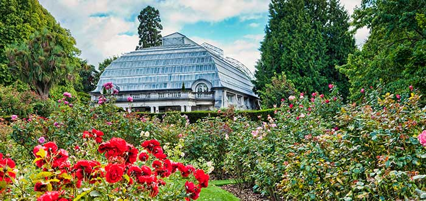
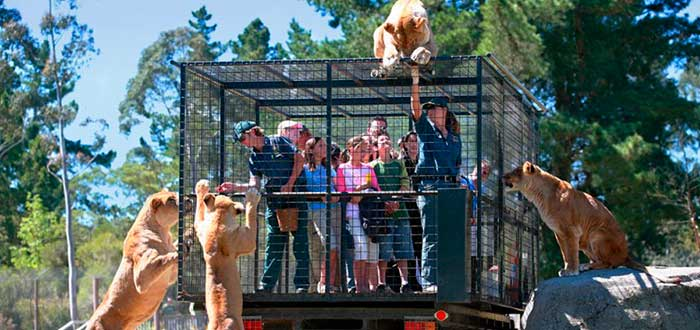
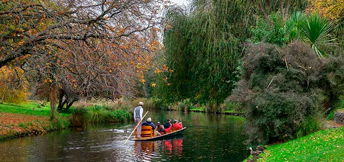

Christchurch
Christchurch es una ciudad de Nueva Zelanda, fundada en 1850 y ubicada aproximadamente a 300 kilómetros al sur de la capital, Wellington, en la costa este de la Isla del Sur, siendo la ciudad más grande de esta y la segunda del país después de Auckland. Christchurch está en la región de Canterbury.
Su nombre en maorí es Ōtautahi ("el lugar de Tautahi"), que viene del cacique maorí Tautahi, líder de una población a orillas del río Avon en el siglo XIX. El nombre de la ciudad suele abreviarse por los neozelandeses como Chch.
La población es de 390 300 hab.
La superficie es de 1426 km²
Clima
Christchurch tiene un clima templado, con una media de temperaturas diarias máximas de 22.4 °C en enero y 10,7 °C en julio.
El clima de verano es a menudo moderado por un brisa marina desde el noreste, pero una temperatura récord de 41,6 °C se alcanzó en febrero de 1973.
En invierno es común que la temperatura caiga por debajo de 0 °C durante la noche. Hay un promedio de 70 días de heladas por año.9 Las nevadas ocurren en promedio una o dos veces al año en las colinas de los suburbios, y una o dos veces cada dos años, en las llanuras
Economia
La economía local está dominada por los productos agrícolas de las llanuras de Canterbury. Desde el comienzo, hubo fabricantes que convirtieron los productos agrícolas, especialmente los de cordero y los productos lácteos, en productos elaborados.
El turismo también es un factor importante de la economía local. Su proximidad a las pistas de esquí y otras atracciones de los Alpes Neozelandeses, combinado con su aeropuerto y hoteles, lo convierte en una parada importante para muchos turistas.
Lugares Turisticos
Jardín Botánico de Christchurch
El Jardín botánico de Christchurch es un importante espacio verde ubicado en pleno centro urbano y a orillas del Río Avon. Cultivado de forma elegante y con una gran variedad de plantas exóticas del país, es uno de los imprescindibles que ver en Christchurch.
Sus orígenes comenzaron con la plantación de un árbol de cedro inglés, y en la actualidad cuenta con una extensión de 30 hectáreas. En su interior podrás conocer 10 hermosos subjardines que te enamorarán, como el Jardín de Rosas, el Jardín de Hierbas o el Jardín de Rocas.
Orana Wildlife Park
Cada vez son más las personas que se posicionan en contra de los zoológicos por el hecho de enjaular animales de naturaleza salvaje. Sin embargo, el Orana Wildlife Park rompe con todo esquema conocido hasta ahora y ofrece un intercambio de roles.
Por primera vez, los más de 400 animales podrán mantenerse en su hábitat natural y seremos nosotros quienes les visiten desde una jaula en la parte trasera de un coche. Esta experiencia única bien merece figurar entre los lugares imprescindibles que ver en Christchurch.
Rio Avon
Llegamos al último de nuestros lugares imprescindibles que ver en Christchurch es el Río Avon, y va ligado a una experiencia ambientada que no puedes dejar de vivir. Ésta consiste en un paseo guiado a lo largo del río, donde un barquero vestido con un típico traje eduardiano te irá relatando todo lo que necesites saber.
Además de resultar una perspectiva completamente distinta para explorar el Jardín Botánico y el Parque Hagley, mendionados anteriormente, es también un plan ideal tanto si quieres conquistar alguien como si buscas pasar un agradable rato en familia.
Hoteles
Sudima Christchurch City
Hotel 5 estrellas.
Este hotel moderno con un exterior de vidrio ondulado se encuentra en una animada esquina entre bares y restaurantes, a 1 km de los jardines botánicos de Christchurch y del Museo de Canterbury. El aeropuerto internacional de Christchurch está a 10 km en coche.
El precio por día es de 5726 UYU.
Numero de contacto : +64 3-930 7000
BreakFree on Cashel Christchurch
Hotel 3 estrellas .
Este hotel urbano ocupa una torre moderna en el centro de Christchurch y se encuentra a 13 minutos a pie de la Christchurch Art Gallery Te Puna o Waiwhetu y a 15 minutos a pie del casino de Christchurch.
Numero de contacto : +64 800 448 891
El precio por dia es de 2284 UYU
Jailhouse Accommodation

Hotel 3 estrellas.
Este albergue sencillo está situado en una antigua cárcel de estilo neogótico que data de 1874, a 2 km del Canterbury Museum y de la estación de tren de Christchurch, y a 3 km del Hagley Park.
El precio por dia es de 1218 UYU
Numero de contacto : +64 3-982 7777